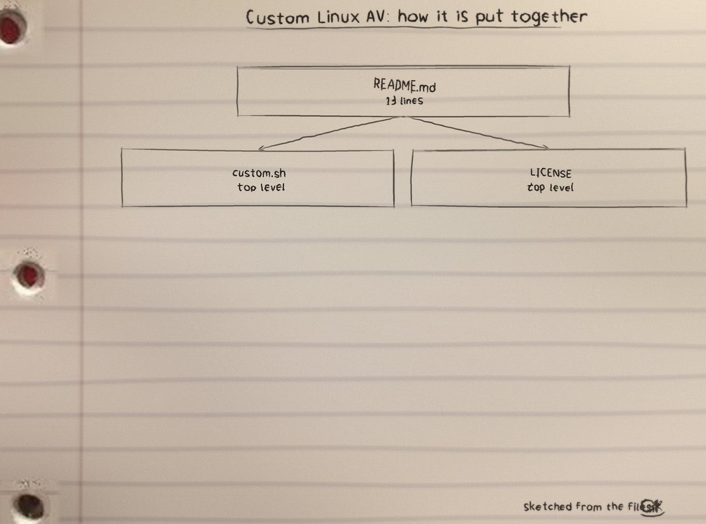
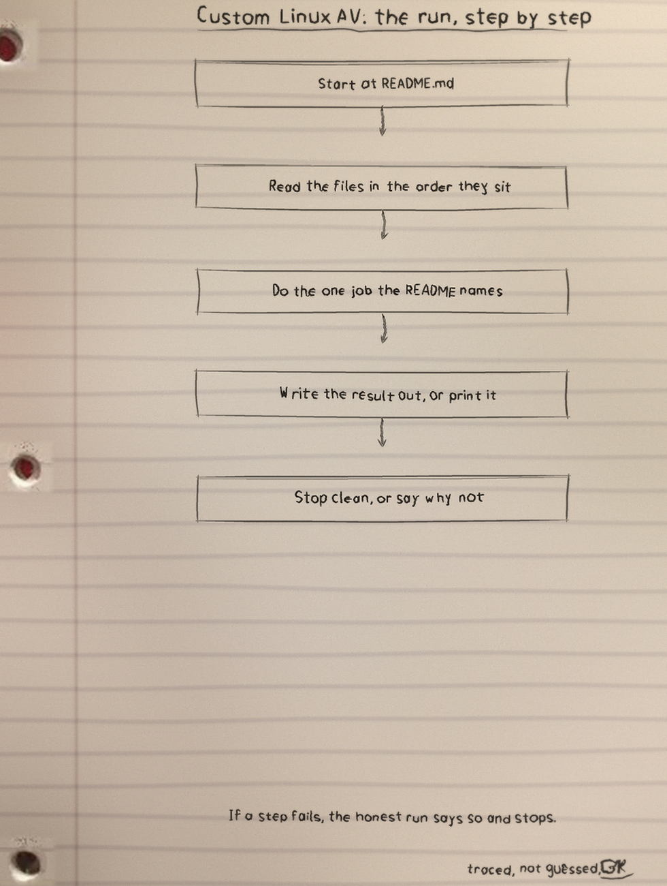
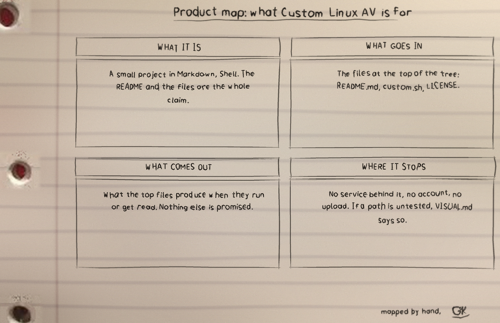

First tree: what grows here
The three moves, in order:
sudo freshclamto refresh signatures.sudo mkdir -p virusto make the quarantine folder.sudo clamscan -r --move=./virus /to walk the whole filesystem and move detections into./virus.
Second tree: fruit and culls
| Exit | Meaning |
|---|---|
| 0 | The scan ran clean. |
| 1 | The scan ran and moved infected files into ./virus, and that counts as success. |
| 2 | The scan could not run. |
Fallback: a failed update still scans on older signatures when a database already exists.
Third tree: hard limits
Pruned short: no cron job yet, no realtime watching, no rootkit tool, detection only as good as ClamAV signatures.
Caution: a false positive system file will be moved like any other and can break an install, so ./virus gets reviewed before anything is deleted.
Fourth tree: run it
git clone https://github.com/Epsilon0xCell/Custom-Linux-AV.git
cd Custom-Linux-AV
chmod +x custom.sh
./custom.shTest note: python3 -m unittest driving test_custom.py with stub sudo, freshclam and clamscan commands.
The code, as it sits in the repo
From README.md, line 1 on. I did not tidy it for the page. What you see is what the file has.
# Custom-Linux-AV
My custom GNU/Linux AV that runs daily
# How to run?
Git clone this repo
chmod +x the file
./ run the file
# Todo:
Setup cron
# Ideology
With GNU/Linux realtime protection and windows malware scanning tools like clamAV will not be as important but still very important, however, rootkits are really the issue and this custom linux antivirus has a focus on rootkits rather than general malware scanners. I will also in the future maybe develop a GNU/Linux hardening script. This script places malware in a quarantine folder so you decide what to do with the detections.The files
| File | Lines |
|---|---|
README.md | 13 |
custom.sh | 6 |
LICENSE | 0 |
Licence: MIT.
The sheets
The full set is the Custom-Linux-AV-Visuals folder in the repo.


